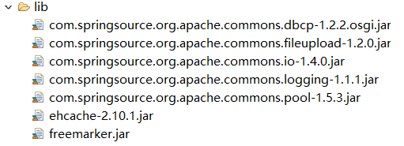
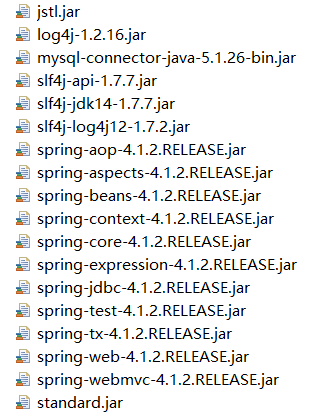
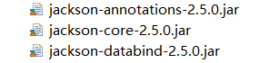
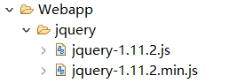

一、什么是Ajax?
Ajax:异步的JavaScript和Json（这里XML改为了Json)；
作用：用于完成网页局部刷新功能（修改少量数据只用局部刷新，不用再整个网页重新加载）；
二、SpringMVC和Jquery的简单介绍
SpringMVC：是基于Spring的一个子框架(MVC框架)，功能强于Spring，这个框架主要是解决咱们Controller这一层的问题。
M：model-模型User
V：view-视图jsp
C：Controller-控制器servlet
jQuery框架： 是一个程序员使用比较多的JS框架，功能较为强大。
理念：写的更少，做的更多
优点：1.兼容各种浏览器
2.操作Ajax很简单
版本：1.x 版本兼容IE浏览器
2.x，3.x....及之后的不兼容IE
jQuery的更新主要有两个路线：
路线一：1.3,1.4,1.x.........这个路线主要是坚持于兼容IE浏览器
路线二：2.x，3.x.......这个路线不再兼容IE浏览器
两路线并没有版本前后的关系
三、SpringMVC的配置
1、导入Jar包


2、配置核心控制器web.xml
<?xml version="1.0" encoding="UTF-8"?>
<web-app xmlns:xsi="http://www.w3.org/2001/XMLSchema-instance"
xmlns="http://xmlns.jcp.org/xml/ns/javaee"
xsi:schemaLocation="http://xmlns.jcp.org/xml/ns/javaee http://xmlns.jcp.org/xml/ns/javaee/web-app_3_1.xsd"
id="WebApp_ID" version="3.1">
<!-- 核心控制器 -->
<servlet>
<servlet-name>dispatcher</servlet-name>
<servlet-class>org.springframework.web.servlet.DispatcherServlet</servlet-class>
<init-param>
<!-- SpringMVC的配置文件的位置 -->
<param-name>contextConfigLocation</param-name>
<param-value>classpath:applicationContext-mvc.xml</param-value>
</init-param>
<!--即SpringMVC跟着服务器(tomcat)的启动而启动 -->
<load-on-startup>1</load-on-startup>
</servlet>
<servlet-mapping>
<servlet-name>dispatcher</servlet-name>
<!--使用杠（/）更加符合咱们的RESTful风格 -->
<url-pattern>/</url-pattern>
</servlet-mapping>
<!-- 配置相应的过滤器:角色SpringMVC 的POST请求的乱码问题 -->
<!-- 配置编码方式过滤器,注意一点:要配置在所有过滤器的前面 -->
<filter>
<filter-name>CharacterEncodingFilter</filter-name>
<filter-class>org.springframework.web.filter.CharacterEncodingFilter</filter-class>
<init-param>
<param-name>encoding</param-name>
<param-value>utf-8</param-value>
</init-param>
</filter>
<filter-mapping>
<filter-name>CharacterEncodingFilter</filter-name>
<url-pattern>/*</url-pattern>
</filter-mapping>
</web-app>
3、配置 applicationContext.xml
<?xml version="1.0" encoding="UTF-8"?>
<beans xmlns="http://www.springframework.org/schema/beans"
xmlns:xsi="http://www.w3.org/2001/XMLSchema-instance"
xmlns:context="http://www.springframework.org/schema/context"
xmlns:mvc="http://www.springframework.org/schema/mvc"
xsi:schemaLocation="
http://www.springframework.org/schema/beans
http://www.springframework.org/schema/beans/spring-beans.xsd
http://www.springframework.org/schema/context
http://www.springframework.org/schema/context/spring-context.xsd
http://www.springframework.org/schema/mvc
http://www.springframework.org/schema/mvc/spring-mvc.xsd
" >
<!-- 扫描包:controller所在位置 -->
<context:component-scan base-package="controller" />
<!--支持SpringMVC特有的注解 -->
<mvc:annotation-driven />
<!-- 对静态资源放行 -->
<mvc:default-servlet-handler />
<!-- 视图解析器：自动为咱们添加前缀与后缀 -->
<bean class="org.springframework.web.servlet.view.InternalResourceViewResolver">
<property name="prefix" value="/WEB-INF/views/" />
<property name="suffix" value=".jsp" />
</bean>
<!-- 上传解析器 -->
<bean id="multipartResolver"
class="org.springframework.web.multipart.commons.CommonsMultipartResolver">
<property name="maxUploadSize">
<!-- 上传文件大小的上限 -->
<value>2000000000</value>
</property>
</bean>
</beans>
4、Controller层注解
@Controller
@RequestMapping("/Jquery")
四、Jquery框架配置
1、导包（因为在前端需要用到Json,所以需要导入Json的包）

2、项目中引入Jquery

3、html中引入Jquery
<!-- 导入jquery,jquery共有两个版本，jquery-1.11.2.js:有完整的源代码，比较占空间，jquery-1.11.2.min.js：是压缩版，比较节约空间 -->
<script type="text/javascript" src="/jquery/jquery-1.11.2.min.js"></script>
五、前端代码展示：
<!DOCTYPE html>
<html>
<head>
<meta charset="UTF-8">
<title>Insert title here</title>
<!-- 导入jquery,jquery共有两个版本，jquery-1.11.2.js:有完整的源代码，比较占空间，jquery-1.11.2.min.js：是压缩版，比较节约空间 -->
<script type="text/javascript" src="/jquery/jquery-1.11.2.min.js"></script>
<script type="text/javascript">
function login(){
/**
* 提交方式一：整个表单的数据提交方式
*/
//serialize():表单序列化
var params = $("#loginForm").serialize();
//post请求，params:请求参数，将数据传到后端，function(result){}:回调函数，接收后端返回的数据，参数名（result）可随便取
$.post("/Jquery/login",params,function(result){
//因为SpringMVC框架和Jquery框架的联合作用，使得传回来的result保留了原有数据类型
if(result){//登录成功
window.location.href="http://www.baidu.com";
}else{
//完全等于 document.getElementById("erSpan").innerHTML = result+":"+"登录失败！";
$("#erSpan").html(result+":"+"登录失败！");
}
})
}
function login2(){
/**
*提交方式二：一个个数据上传的方式
*/
//以下两句相当于 document.getElementById("userName").value;
var userName = $("#userName").val();
var pwd = $("#pwd").val();
//写法一：key值必须要加"";
//var params = {"userName":userName,"pwd":pwd};
//写法二：
var params = "userName="+userName+"&pwd="+pwd;
//发送请求到后台
//如果要传参，直接在第二个参数中传就可以了
$.post("/Jquery/login",params,function(result){
//因为SpringMVC框架和Jquery框架的联合作用，使得传回来的result保留了原有数据类型
if(result){
window.location.href="http://www.baidu.com"
}else{
//完全等于document.getElementById("erSpan").innerHTML = result+":"+"登录失败！";
$("#erSpan").html(result+":"+"登录失败！");
}
})
}
</script>
</head>
<body>
<span id="erSpan"></span>
<form id="loginForm" action="/Jquery/login" method="post">
用户名：<input type="text" name="userName" id="userName" /> <br />
密码<input type="text" name="pwd" id="pwd" /><br />
<input type="button" value="ajax表单提交" onclick="login()" />
<input type="button" value="ajax单独提交" onclick="login2()" />
</form>
</body>
</html>
六、Controller层代码展示：
package controller;
import org.springframework.stereotype.Controller;
import org.springframework.web.bind.annotation.RequestMapping;
import org.springframework.web.bind.annotation.ResponseBody;
@Controller
@RequestMapping("/Jquery")
public class JqueryController {
/*
* 注意：如果在浏览器上访问login.html的路径为：IP:端口号/login.html,而这里访问login方法的路径直接为：
/login,前面没有任何路径，如@RequestMapping("/Jquery")，则会出现406错误
*/
@RequestMapping("/login")
@ResponseBody//加上这个注解，return 就不会再跳转页面，只是返回数据（json）
public Boolean login(String userName,String pwd){
System.out.println(userName+":"+pwd);
if("流星".equals(userName) && "456".equals(pwd)){
return true;
}
return false;
}
}